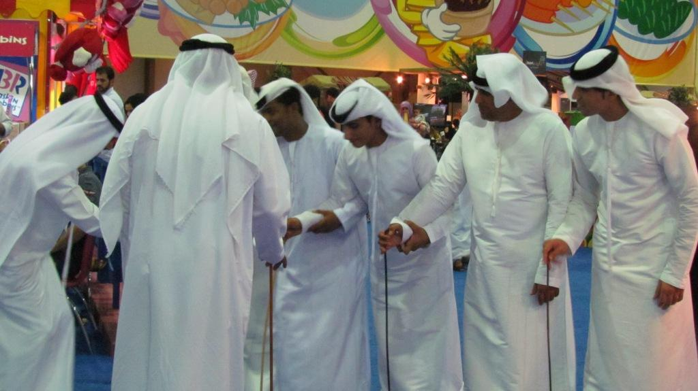

Musica y Danza
La música y danza poseen influencias de diferentes culturas africanas con las que Dubái ha mantenido un estrecho contacto comercial a lo largo de la historia. Existe una variedad de instrumentos musicales fabricados por lo general con partes de animales. Predominan los de percusión como la tamboura, que tiene forma de arpa264 y cuenta con cinco cuerdas hechas con intestinos de caballo, la cual es tocada encima de una base de madera con un mástil que también tiene forma de arco; el manior, un cinturón fabricado con algodón y pezuñas de cabras; y varios tambores de diversas formas que producen distintos sonidos. Entre las danzas más conocidas están la liwa,265 interpretada en lengua suajili e incluye sonidos de tambores; y la ayyalah, en la que participan varios hombres de pie, con los brazos extendidos, y con bastones o espadas en las manos.266
Los géneros musicales más populares en Dubái son el pop, el rock, el jazz, el heavy metal, el hip hop y el punk.267 268 269 Entre los artistas y bandas musicales más conocidos están las agrupaciones Nervecell y Nikotin, de metal y rock respectivamente; la banda de funk Abri; y los intérpretes Mohammed al-Mazem, Fayed al-Saeed y Ahlam. Suelen organizarse varios festivales musicales en el año, como el Dubai Sound City, el Dubai Desert Rock266 y el Atelier Live Musical Festival Dubai.270 Adicionalmente algunos institutos privados ofrecen cursos y talleres de música y danza, como el Cello Music & Ballet Centre,271 Solid Rock Music and Dance272 y el Trinity Music Institute Dubai,273 entre otros. Hasta 2014 habían más de veinte centros de danza en el emirato.
Respecto a las artes escénicas, el Dubai Community Theatre and Art Centre ha servido como escenario para la exhibición de obras de teatro y recitales de ballet, además de contar con espacios para cursos de arte, teatro y fotografía, entre otras variantes artísticas.275 Igualmente la Ópera de Dubái, inaugurada en 2016, constituye un recinto para la difusión de eventos artísticos y musicales.276 En años más recientes ha habido un auge en la aparición de academias de performance.274